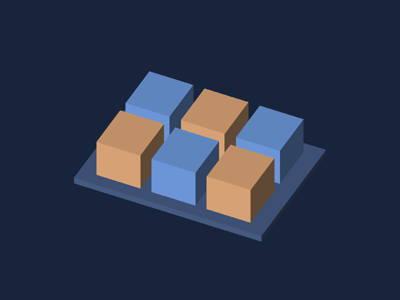

Scenes and cameras
A Scene owns top-level immutable shapes and world labels. Add, Remove, Replace, AddLabel, RemoveLabel, and Clear raise a synchronous change notification after a successful mutation. A SceneView bound to the scene invalidates its cached frame. A Camera has independent yaw, pitch, distance, target, field of view, near plane, projection mode, and orthographic height; its changes invalidate the same view.
var scene = new Scene().Add(Shape.Box().Named("Housing"));
var camera = new Camera(5, yaw: .55f, pitch: .35f);
camera.Projection = CameraProjection.Orthographic;
camera.FitToScene(scene, aspectRatio: 16f / 9);
view.Scene = scene;
view.Camera = camera;
FitToScene encloses world bounds conservatively and updates the camera atomically. Empty scenes leave the camera unchanged. Scene.GetBounds excludes labels and enforces the same aggregate triangle limit as rendering. In orthographic mode, zoom changes the visible height; in perspective mode it changes distance. Camera.Target moves the orbit center.

WorldLabel positions are projected to frame pixels. Labels are overlays: they are clipped by the viewport and near plane, but they do not participate in depth testing or picking. Use them for callouts, not occluded geometry annotations.